Home / MLT / Week 5 / Real questions
MLT week 5 - real exam questions
50 questions pulled from past papers whose wording matches this week's topics, newest first, duplicates removed. Pick your answers, then press Check answers. Figures and answer keys are the originals.
 features, the following weight vectors all produce an equal mean squared error:
features, the following weight vectors all produce an equal mean squared error:  Which of the weight vectors is likely to be chosen by ridge regression?
Which of the weight vectors is likely to be chosen by ridge regression?


 and binary label
and binary label  :
:
 Consider the following three claims about this dataset: (i) Logistic regression (using the raw features
Consider the following three claims about this dataset: (i) Logistic regression (using the raw features  , with or without a bias term) can achieve zero training error. (ii) A decision tree of depth at most
, with or without a bias term) can achieve zero training error. (ii) A decision tree of depth at most  , using axis-aligned splits on , can achieve zero training error. (iii)
, using axis-aligned splits on , can achieve zero training error. (iii)  -nearest-neighbour, evaluated on this training set, achieves zero training error. Consider each point is its own nearest neighbour. Select the option that lists exactly the claims that are true.
-nearest-neighbour, evaluated on this training set, achieves zero training error. Consider each point is its own nearest neighbour. Select the option that lists exactly the claims that are true.- (i), (ii) and (iii)
- Only (ii) and (iii)
- Only (i) and (iii)
- Only (iii)
 for one class and
for one class and  for the other. Without manually creating nonlinear features, which classifier among the three is most naturally capable of representing this type of decision boundary?
for the other. Without manually creating nonlinear features, which classifier among the three is most naturally capable of representing this type of decision boundary?- Perceptron
- Logistic Regression
- Decision Tree
- None of these
. You fit three models to the data: linear regression, polynomial regression of degree , and polynomial regression of degree  . Which option correctly characterizes the bias and variance of each fitted model relative to the true model?
. Which option correctly characterizes the bias and variance of each fitted model relative to the true model?- Linear: low bias, low variance; degree- : low bias, high variance; degree- : high bias, high variance.
- Linear: high bias, high variance; degree- : low bias, low variance; degree- : high bias, low variance.
- Linear: low bias, high variance; degree- : high bias, low variance; degree- : low bias, high variance.
- Linear: high bias, low variance; degree- : low bias, low variance; degree- : low bias, high variance.
 (the model is
(the model is  ). The current weight is
). The current weight is  , the training set is a single example
, the training set is a single example  , and the step size is
, and the step size is  . Gradient ascent is performed directly on the log-likelihood of the data. Compute
. Gradient ascent is performed directly on the log-likelihood of the data. Compute  after one gradient-ascent step. (Round to decimal places; enter
after one gradient-ascent step. (Round to decimal places; enter  if it cannot be determined.)
if it cannot be determined.) . What score threshold
. What score threshold  (with
(with  at the boundary of this rule) does this correspond to? (Round to decimal places.)
at the boundary of this rule) does this correspond to? (Round to decimal places.) . The squared-error objective over the training set is
. The squared-error objective over the training set is
 . The dataset is
. The dataset is  . Starting from
. Starting from  with learning rate
with learning rate  perform one gradient-descent step. What is the model's prediction at
perform one gradient-descent step. What is the model's prediction at  ?
?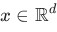
. Define the decision boundary of a trained classifier as the set of points at which its predicted label changes. For which of the following method(s) can this decision boundary be non-linear in ?
?- Perceptron.
- Logistic regression, predicting the positive class when
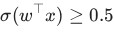
. - -nearest-neighbour with Euclidean distance.
- A decision tree using axis-aligned splits.
- Gaussian Naïve Bayes in which the class-conditional feature variances differ between the two classes.
- A support vector machine with a linear kernel.
- A support vector machine with an RBF (Gaussian) kernel.
- Regularising the weights in a linear/logistic regression model increases bias and decreases variance.
- Increasing the maximum depth of a decision tree increases bias and decreases variance.
- Increasing the number of hidden units in a neural network decreases bias and increases variance.
- Removing all the non-support-vectors from the training set of an SVM leaves both bias and variance unchanged.
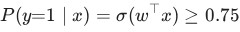
. What score threshold (with at the boundary of this rule) does this correspond to? (Round to 2 decimal places.)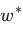
be the solution to the ordinary least-squares linear regression problem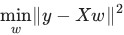
. Which of the following is always satisfied at ? Note that here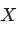
is your feature matrix and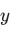
is the label vector.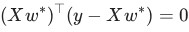
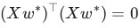
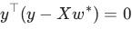
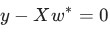
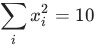
and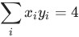
, with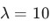
, compute the optimal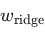
. Note that is
is  th data point and
th data point and 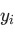
is th label. (Round to 2 decimal places.)- Perceptron only
- Logistic Regression only
- Both Perceptron and Logistic Regression
- Decision Tree only
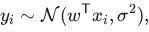
where the observations are independent. Suppose the true noise variance is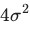
instead of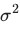
, while the dataset and the observed labels remain unchanged. What happens to the maximum likelihood estimator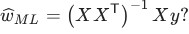
- It is unchanged.
- It is scaled by .
- It is scaled by
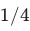
. - It cannot be determined without knowing .
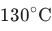
and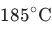
. To study the relationship between temperature and fold thickness,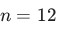
observations of temperature and the corresponding fold thickness were collected. The scatter plot along with the fitted simple linear regression line is shown below.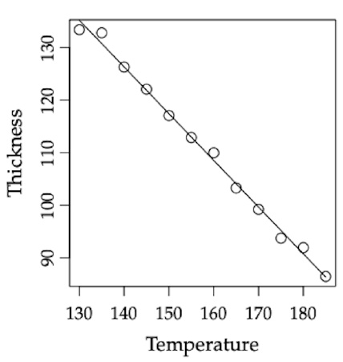
Determine, by inspecting the figure, which of the following sets of parameter estimates for the simple linear regression model is most appropriate. Note: The regression model is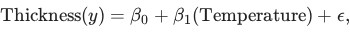
where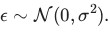
Here,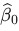
is the estimated intercept,•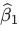
is the estimated slope, and•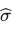
is the estimated standard deviation of the error term.•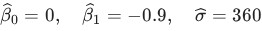
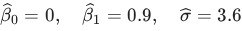
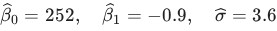
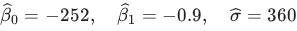
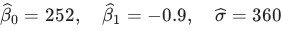
 minimizes the sum of squared errors (SSE) loss
minimizes the sum of squared errors (SSE) loss
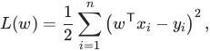
while another student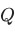
minimizes the mean squared error (MSE) loss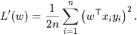
Both students use gradient descent with the same learning rate and the same initial parameter vector
and the same initial parameter vector 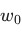
. Which one of the following statements is correct?- They converge to different minimizers, because the losses differ.
- They converge to the same minimizer, but 's steps are
 times smaller; would need learning rate
times smaller; would need learning rate 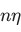
to reproduce 's trajectory. - They converge to the same minimizer, and their iterates coincide at every step.
- They converge to the same minimizer, but 's steps are times larger.
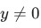
is orthogonal to every feature vector, i.e.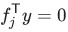
for all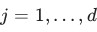
. is the optimal weight obtained after minimizing the objective function of linear regression. Which statement is correct?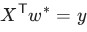
and the training error is .
.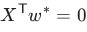
and the squared training error equals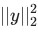
.- and the squared training error equals .
- The normal equations have no solution.
 neurons• Two hidden layers, each with
neurons• Two hidden layers, each with 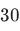
neurons• Output layer with one neuron• Find the total number of parameters in the network. Ignore the biases. and labels in
and labels in 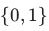
. The weight vector learnt by the classifier is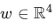
. Given a test data-point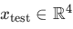
, the probability , where is the base of the natural logarithm. Find the value of and enter the nearest integer as your answer. . is a data-point from the positive class while is from the negative class. We now consider three linear classifiers: perceptron, logistic regression and SVM.
If is the weight vector with the largest margin, which of the following is true?
. is a data-point from the positive class while is from the negative class. We now consider three linear classifiers: perceptron, logistic regression and SVM.
If is the weight vector with the largest margin, which of the following is true?
- All three classifiers output
- Only SVM outputs
- Only SVM and perceptron output
- Only perceptron and logistic regression output
 datapoints , where each . Let the four features be denoted by and .Suppose the features satisfy the following linear relationship: That is, one of the features is an exact linear combination of others. A linear regression model is trained to predict a target variable using these features. Consider the following statements: Consider the following statements: Which of the following is (are) true?
datapoints , where each . Let the four features be denoted by and .Suppose the features satisfy the following linear relationship: That is, one of the features is an exact linear combination of others. A linear regression model is trained to predict a target variable using these features. Consider the following statements: Consider the following statements: Which of the following is (are) true?- Linear regression without regularization will achieve training MSE less than or equal to that of ridge regression.
- The solution for linear regression without regularization may not be unique.
- Ridge regression (L2 regularization) will always set at least one coefficient exactly to zero.
- Lasso regression (L1 regularization) can force some feature weights to become exactly zero.
 neurons • Three hidden layers, each with neurons • Output layer with one neuron Find the total number of parameters in the network. Ignore the biases.
neurons • Three hidden layers, each with neurons • Output layer with one neuron Find the total number of parameters in the network. Ignore the biases. . The
. The  data-point's feature-label pair is represented as . Let be the optimal weight vector that minimizes the sum of squared errors. Consider two scenarios: : , for each data-point . : , for each data-point . Which of the following is true?
data-point's feature-label pair is represented as . Let be the optimal weight vector that minimizes the sum of squared errors. Consider two scenarios: : , for each data-point . : , for each data-point . Which of the following is true?- is possible, but is impossible.
- is impossible, but is possible.
- One of or is possible.
- Both and are impossible.
 is determined using 5-fold cross-validation. The following table summarizes the average Training Error and Validation Error (Mean Squared Error) obtained for various values of :
Based on the cross-validation results provided, what is the most appropriate choice for ?
is determined using 5-fold cross-validation. The following table summarizes the average Training Error and Validation Error (Mean Squared Error) obtained for various values of :
Based on the cross-validation results provided, what is the most appropriate choice for ?- 0.001
- 0.1
- 1.0
- 10.0
- 100
- Under Assumption A, the MLE is equivalent to minimizing Mean Squared Error (MSE), which is highly sensitive to outliers because the penalty grows quadratically.
- Under Assumption B, the MLE is equivalent to L1 regularization, which is more robust to outliers because the penalty for large residuals grows linearly.
- Both Assumption A and Assumption B lead to the same optimal parameter vector regardless of the presence of outliers.
- All the given options are correct
- Gradient descent will converge to a global minimum.
- Gradient descent will converge to a local minimum (which is not a globalminimum).
- Stochastic gradient descent is guaranteed to converge to a global minimum.
- Gradient descent will take lesser number of iterations to converge to a localminimum than stochastic gradient descent.

- It ensures that the dataset is normally distributed.
- It penalizes large coefficients to reduce overfitting.
- It forces more coefficients to be exactly zero, performing feature selection.
- It increases the variance of the model.

- It penalizes large coefficients to reduce overfitting.
- It shrinks the coefficients but does not set them to zero.
- It forces more coefficients to be exactly zero, performing feature selection.
- It has no effect on the regression model.

- It ensures that the regression model remains linear.
- It computes the similarity between data points in a transformed feature space.
- It allows the model to capture non-linear relationships by mapping data to ahigher-dimensional space.
- It helps in reducing the variance of the model.
- It minimizes the loss function in regression problems.
- Ridge regression
- LASSO regression
- It can not be used for both regression and classification problems
- It can have more than two hidden layers
- The activation functions have to be non-linear to separate not linearlyseparable data points
- Each neuron in the neural network may or may not have bias associated with it


- The kernel regression is parametric
- The kernel regression is non-parametric
- The Kernel matrix K is positive semi-definite
- In general, Kernel regression is computationally expensive than a simple linearregression

- w1 → Lasso regression, w2 → Linear regression, w3 → Ridge regression
- w1→ Ridge regression, w2 → Lasso regression, w3 → Linear regression
- w1 → Linear regression, w2 → Ridge regression, w3 → Lasso regression
- w1 → Ridge regression, w2 → Linear regression, w3 → Lasso regression
- Ridge regression and Lasso regression both puts a limit on the length ofweight vector.
- Ridge regression puts limit on length of the weight vector but LASSOregression does not put a limit on weight vector length.
- When many features are redundant, then LASSO regression is moreappropriate than ridge regression and linear regression as LASSO regression produces sparseweights for those features.
- When many features are redundant, then linear regression is moreappropriate than ridge regression and LASSO regression


- Number of features in the training data may be too low, try increasing them.
- Number of features in the training data may be too high, try reducing them.
- Learning rate may be too low; Try increasing it.
- Learning rate may be too high; Try reducing it.
- Learning rate may be too low; Try increasing it.
- Learning rate may be too high; Try reducing it.
- Number of features in the training data may be too low, try increasing them.
- Number of features in the training data may be too high, try reducing them.

- The polynomial regression model of degree 6 adds a smooth fitting to thisdata.
- The polynomial regression model of degree 98 overfits this data.
- The polynomial regression model of degree 2 adds a smooth fitting to thisdata.
- The polynomial regression model of degree 3 underfits this data.


- The polynomial regression model of degree 5 adds a smooth fitting to thisdata.
- The polynomial regression model of degree 99 overfits this data.
- The polynomial regression model of degree 1 adds a smooth fitting to thisdata.
- The polynomial regression model of degree 2 underfits this data.


- The threshold should be a low value.
- The threshold should be a high value.
- The performance of the classifier is independent of the threshold.